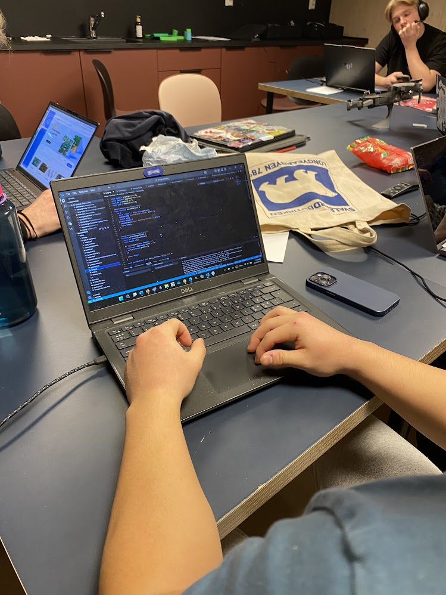

begroingsplater-prosjekt
Intro
Forskerklassen hadde et prosjekt om å lage noen begroingsplater som man skulle sette
i vann for å få plankton til å vokse på det.
69
Antall timer brukt
420
Antall plater
67
Andre ting
Utstyr
For å lage begroingsplatene trenger vi noe som planton klarer å gro på. Vi prøvde å bruke ting vi har fra før og endte opp med å bruke gamle CD-er og røde stolper som er langs veien.
Sette sammen
For å få planktonene til å kunne gro på CD-ene måtte vi pusse dem. Så festa vi CD-ene sammen med stolpene og gjorde de klare til å legge i vannet.
Sette ut
Den tredje dagen dro vi ut til kaien og plaserte ut begroingsplatene
Sjekke opp
Videre skal vi sjekke opp hvordan det går med de, og se om det vokser noe plankton på de.
Resultater
Eg vet ikke noe faktisk om detta...
Bilder
